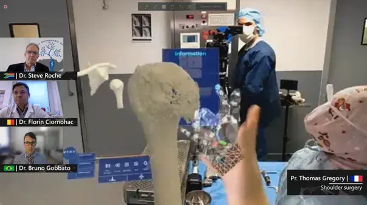

Main, poignet & coude
Chirurgie de la main, pathologies du poignet et du coude, syndrome du canal carpien et neuropathies périphériques.
Consulter l’annuaire du serviceHÔPITAL UNIVERSITAIRE · BOBIGNY
Le service de l’Hôpital Avicenne AP–HP prend en charge les pathologies et traumatismes de l’appareil locomoteur.
Vous êtes médecin de ville ? Adresser un patient via Direct AP–HPL’accueil des urgences de la main se fait au sein du service des urgences de l’Hôpital Avicenne.
LE SERVICE
Le service associe activité de soins, enseignement et recherche à l’Hôpital Avicenne, à Bobigny. Il est dirigé par le Pr Thomas Gregory, professeur de chirurgie orthopédique et traumatologique à l’Université Sorbonne Paris Nord.
L’annuaire AP–HP répertorie les expertises du service, les modalités de consultation et les coordonnées utiles. Les soins et techniques proposés dépendent de la situation de chaque patient et de l’évaluation médicale.
OFFRE DE SOINS
Les pathologies listées ci-dessous sont celles publiées dans l’annuaire AP–HP pour le service d’Avicenne.
Chirurgie de la main, pathologies du poignet et du coude, syndrome du canal carpien et neuropathies périphériques.
Consulter l’annuaire du servicePathologies de l’épaule, notamment arthrose et lésions traumatiques, répertoriées par l’AP–HP.
En savoir plusArthrose du genou, lésions des ligaments croisés antérieurs, pathologies du pied et arthrose de cheville.
Consulter l’annuaire du serviceFractures, séquelles de fractures compliquées et urgences traumatiques.
Consulter l’annuaire du serviceLa présence d’une pathologie dans l’annuaire ne vaut pas indication opératoire. L’équipe médicale détermine le parcours adapté à chaque situation.
ÉQUIPE MÉDICALE
Le Pr Thomas Gregory dirige le service de chirurgie orthopédique et traumatologique de l’Hôpital Avicenne.
Profil AP–HP du Pr GregoryRECHERCHE & INNOVATION
Le Pr Thomas Gregory et son équipe ont participé à plusieurs projets AP–HP autour de la réalité mixte en chirurgie orthopédique. Ces jalons témoignent d’une activité hospitalo-universitaire et de recherche ; les techniques utilisées en soin dépendent de chaque indication.
Lire le dossier AP–HP
Intervention de l’épaule avec une plateforme collaborative de réalité mixte à Avicenne.
24 Hours Holographic Surgery : 15 chirurgiens dans 13 pays, avec un pilotage depuis Avicenne.
Une arthroscopie de l’épaule avec Apple Vision Pro, nouvelle étape rapportée par l’AP–HP.
INFORMATIONS PRATIQUES
Les consultations du service sont situées à l’Hôpital Avicenne, à Bobigny.
Calculer mon itinéraire125 rue de Stalingrad
93000 Bobigny
Secrétariat : 01 48 95 53 11
ou 01 48 95 53 14
T1 Arrêt Hôpital Avicenne
M7 La Courneuve – 8 mai 1945, puis tramway T1
M5 Bobigny – Pablo Picasso, puis tramway T1
RER E Noisy-le-Sec, puis tramway T1
PRENDRE RENDEZ-VOUS
La demande de rendez-vous se fait sur le portail patient AP–HP ou par téléphone.